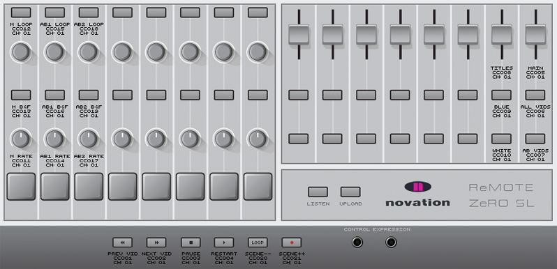

About
When I was a kid, I used to watch Nankyoku Monogatari all the time. Vangelis's Theme from Antartica had a huge emotional impact on me.
Back when I was living in Amsterdam, I had an attic in my apartment. There, I had my studio in which I started writing Soleicare. When I joined Appalaches, we eventually completed the song. The different dynamics of the song deserved visuals that were as epic as Nankyoku Monogatari's, so I went through the film and selected all the nature scenes that would fit that mood.
This document outlines how to use the Max patch created to edit video live while the band is performing Soleicare on stage.
-mat.
How to use the Max patch
MIDI Setup
The ReMOTE ZeRO SL MIDI controller must be connected to the computer via USB before opening the patch.
The image above explains which controls do what in the patch.
Initial Patch setup
Once you opened the Max patch, there are some minor initial settings that are required. They are mostly grouped at the top left of the patch canvas. Below is a screenshot and an explanation of what the settings are.
Make certain to activate them in the order in which they are described.
1. setRelPath
Sets the path relative to the Max patch. Once you click that button, choose the directory in which the patch sits.
2. selMainVideos
Selects the main video file. Should be located at videos/main-jpeg.mov
3. selAB1Videos
Selects the aurora borealis video file. Should be located at videos/aurora-borealis-01-jpeg.mov
4. selAB2Videos
Selects the flipped aurora borealis video file. Should be located at videos/aurora-borealis-02-flipped-jpeg.mov
5. initMetronome
Max videos require a metronome to run. Activate this metronome once all the previous settings are completed.
6. mainVideoVidsButton
Once all is set, click this button to start the main video.
Start playing with video scenes
Show the video
Now you're ready to play with the scenes! Although there is probably currently no output in your video window. The video starts already faded to black. If you take a look at the MIDI controller diagram, you'll see on the top right a slider is assigned to the main video.
Alternatively, you can use the slider UI in the patch.
Once the slider is up, the video will become visible.
Show the title
There is a title video to add to the video at the beginning of the song. You can see an example of what that title looks like in the photo above.
Just like the video, the titles need to be faded in. See the MIDI controller diagram to find which slider to use.
In this case also, you could use the slider UI in the patch.
Go to next or previous video

Live video editing consists of changing scenes on the go, to fit with the music. A scenario will be followed, however this interactive video allows for a certain flexibility.
The way the scenario is built is that a certain amount of videos are preselected for each part of the song, but the editor choose at what moment to go to the next or previous video in this batch. Most probably according to the beat or the changing measures of the song.
The media control buttons at the bottom of the MIDI controller are assigned to do just that. See the diagram to see thoes buttons, and again, you can use the Max UI to control those changes.
Switching between main videos and aurora borealis video
During the bridge, the main videos will be replaced by two streams of aurora borealis overlaid on top of each other, to create intensity.
See the MIDI controller diagram on how to switch the video types. In the Max patch, the buttons are in the init setup area.
Scenario
Scenario remains to be written.